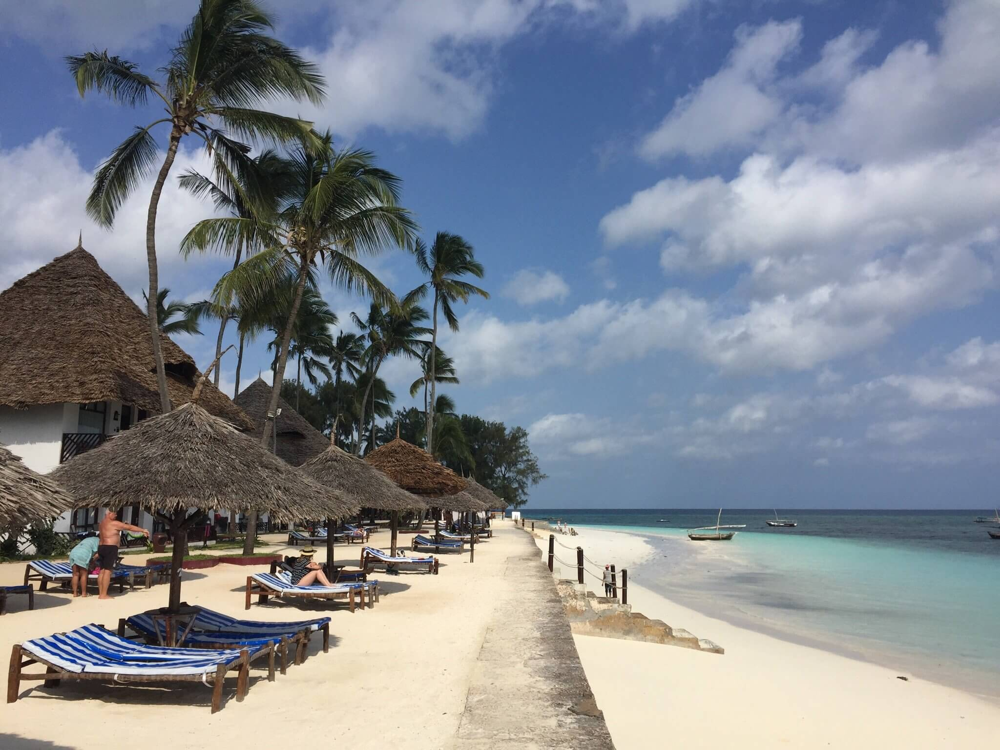

ДИКАЯ ПРИРОДА АРХИПЕЛАГА ЗАНЗИБАР
Остров Занзибар в Индийском океане — это, прежде всего, природа, а уже потом архитектура, культура и все остальное. Лететь сюда рекомендуем тем, кто хочет позагорать на райских островах и поплескаться в бирюзовых океанических водах. Интересна именно дикая природа островов архипелага Занзибар. Да, именно архипелага, потому что кроме одного большого острова есть еще, словно бисер, раскиданные в Индийском океане на небольшом расстоянии друг от друга островки.

Настоящее название этого острова как географического образования — Унгуджа. Это самый крупный остров архипелага, и потому — главный. Площадь его составляет 1666 км², а население — 896 721 человек. Именно на этом острове останавливаются почти все туристы, а уже с него совершают интересные поездки в другие уголки архипелага.
Лес Джозани
Джозани (Национальный парк Jozani Forest) — одна из основных достопримечательностей Занзибара
на фотографиях этот лес обычно смотрится очень интересно, прямо-таки помпезно. Создается ощущение, будто это огромные, почти непроходимые джунгли. На самом же деле, лес занимает весьма скромную площадь — всего 44 кв. км, а водят туристов только по хоженым тропкам, где встретить можно разве что обезьян колобусов, которые сидят на ветках, едят зелень, уничтожая лес день за днем, и совершенно не боятся людей. А вот леопардов и мамб попробуй найди. С другой стороны, оно и хорошо…
Один из самых интересных «экспонатов» леса — это мангровые заросли, которые доходят до самого побережья. Уникальность здешних мангровых деревьев состоит в том, что они способны пить морскую воду. А корни их настолько сильные, что смельчаки на экскурсии даже по ним ходили, не боясь упасть в грязь.
Заказники
На архипелаге Занзибар, помимо национального парка, открыто несколько заказников, в частности, на острове Пемба. Так, в лесном заказнике Ngezi обитает 27 видов птиц: африканский ястреб-тетеревятник, стервятники, летучие лисицы, обезьяны колобусы, антилопы, дикие свиньи и др.
Лесной заповедник Нгези занимает площадь 14,4 квадратных километров (5,6 квадратных миль) и находится на северо-западной оконечности острова Пемба. Он был объявлен заповедником в 1950 году после того, как большая часть территории была оголена для выращивания гвоздики.
Сам остров – коралловый, и его склоны, состоящие из коралловых рощ, населенных множеством самых разнообразных рыб – это настоящий рай для дайверов, простирающийся во всех направлениях.
Дикие пляжи
Пляжи — то, ради чего едут на Занзибар. На основном острове найти по-настоящему девственные не получится: все они так или иначе посещаемы людьми и за ними ухаживают. Да, на каких-то пляжах людей много (например, Кендва и Нунгви), а на каких-то почти нет (например, Мангапвани или Бу-Бу-Бу). Все же везде периодически появляются работники коммунальных служб и одинокие пляжники. Но это настолько редко, что шанс встретиться с ними минимален.
Пляжи здесь состоят из белоснежного кораллового песка, мелкого, очень мягкого и шелковистого на ощупь. В северной части острова располагается пляж Нунгви, который осеняют своей тенью пальмы и мангровые деревья. Этот пляж – самый знаменитый на всем архипелаге, настоящий пейзаж острова Баунти.

В западной части острова находятся такие пляжи, как Мангапване, а восточное побережье украшено очень приятными пляжами Матемве, Пвани Мчангани, Кивенгва, Уроа, Джамбиани и Бвею.
ВВЕРХ